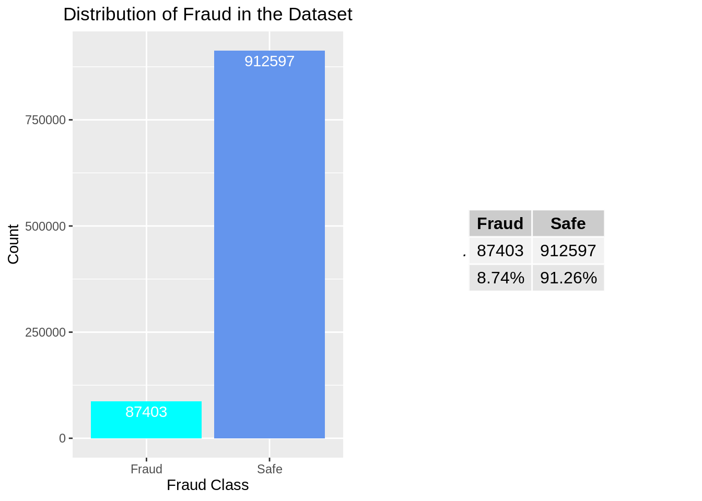

# load packages
library(tidymodels)
library(xgboost)
library(tidyverse)
library(pROC)
library(ggplot2)
library(corrplot)
library(gridExtra)
# read data
data <- read_csv("data/card_transdata.csv") XGBoost Vignette: Fraud Detection
Objectives
In this vignette, you will embark on an in-depth exploration, starting from the foundational theory of XGBoost to its practical application such as Exploratory Data Analysis(EDA) and XGBoost model training. This journey will lead you to effectively utilize XGBoost, which is a cutting-edge and industry-standard model. You’ll develop skills in:
Utilizing functions from the ggplot and corrplot packages for EDA and data visualization. These tools are essential for understanding the underlying patterns and relationships in your data.
Employing functions from the xgboost package to train an Extreme Gradient Boosting Model. This powerful machine learning technique is renowned for its efficiency and effectiveness in various predictive modeling tasks.
Leveraging functions from the pROC package to evaluate the performance of your model. This is crucial for assessing the effectiveness of your predictive model in real-world scenarios.
By the end of this vignette, you will have a solid understanding of how to effectively use these tools in a cohesive workflow to build and assess a robust machine learning model.
Prerequisites
First, please follow the action item below to get set up for the vignette. You may need to install one or more packages if the library() calls return an error.
Introduction
XGBoost, an acronym for eXtreme Gradient Boosting, was crafted by Dr. Tianqi Chen in 2016 as a gradient-boosting algorithm. Demonstrating remarkable success, it has emerged as a formidable player in various data science competitions. Renowned for its exceptional performance, XGBoost stands out as a robust solution for tasks such as handling structured data, text classification, regression, and notably, exhibiting superior capabilities on large-scale datasets. Our vignette presents a comprehensive exploration of XGBoost, including its mathematical principles, programming language support, and practical application in classification problems.
Principal and Theory
Prior to implementing the XGBoost model on the dataset, it is crucial to first understand the underlying mathematical principles of the Boosted Trees and XGBoost
Gradient Boosted Decision Tree (GBDT)
In GBDT, the prediction of observation i is the sum of the predicted values from each of the k trees in the ensemble.
\[\hat{y} = \sum_{i=1}^{k} f_k(x_i)\]Each tree in the boosting model fits the negative gradient of the loss function to the current model’s prediction, and the current model’s prediction is the sum of the first k-1 trees.
If we use mean squared error as the loss function in a regression task, each tree simply fits the residual.
For example, suppose a person is 30 years old, and a GBDT model is used to predict his age.
Given the dataset, suppose the first tree’s prediction is 20.
Then the second tree fits the residual, which is 30 - 20 = 10. Suppose the second tree outputs 7.
Then the third tree fits the residual 10 - 7 = 3. Suppose the third tree outputs 2.
By adding the prediction of the three trees, we get our final prediction.
XGBoost
XGBoost is an efficient and scalable implementation of the gradient-boosted decision tree.
- Tree Boosting
The objective function for k-th tree is \[\sum_{i=1}^{n} l(y_i, \hat{y_i}^{(k)})+\sum_{i=1}^{K}\omega(f_i)\]
The first term in the objective function denotes the loss function. It can be MSE in regression or cross-entropy in classification problems. The second term \(\omega(f_i)\) is a regularized term to control the model’s complexity to avoid overfitting.
When additively training the model, XGBoost used a second-order Taylor expansion to approximate the objective function instead of using the negative gradient.
After derivation, the optimization goal at step k will be \[\sum_{i=1}^{n}[g_if_k(x_i) + \frac{1}{2}h_{i}f_k^2(x_i)] + \omega(f_k)\]
where \(g_i\) and \(h_i\) denote the first-order and second-order derivative of the loss function to the current model’s prediction. i.e. \(g_i = \partial_{\hat{y_i}^{k-1}}l(y_i, \hat{y_i}^{k-1})\) and \(h_i = \partial^2_{\hat{y_i}{k-1}}l(y_i, \hat{y_i}^{k-1})\)
We find that the objective function for each tree depends only on \(g_i\) and \(h_i\), derivatives of the loss function. Therefore, XGBoost can be widely used in many scenarios, including regression, classification, and ranking problems, as long as XGBoost is given a loss function that is second-order differentiable. You can even customize your loss function in XGBoost!
Approximate Split Finding
We first look at a basic greedy approach for finding best split point.

In the above Exact Greedy Algorithm, we need to traverse every possible value of every feature to find the best split point. The score measures the reduction of loss function before and after the split. However, the method is inefficient when dealing with large datasets.
Instead, XGBoost used an approximated approach to find split points efficiently.

In the approximate framework, we first select some candidate splitting points according to percentiles of the feature distribution based on some criteria. For instance, a sorted feature column contains 10 values [1,2,2,2,2,4,5,7,9,20]. A 0.6 quantile corresponds to 4.
Weighted Quantile Sketch
How do we find these candidate split points? We cannot assign equal weights to every observation of the feature, as larger values may have a more significant impact on the loss function. Therefore, we need to calculate a weight for each feature value to make candidates distribute evenly on the data.
For each observation, XGBoost used its second-order derivative \(h_i\) as weight. Formally, let multi-set \(D_k = {(x_{1k},h_1), (x_{2k}, h_2)<e2><80><a6>(x_{nk}, h_{n})}\) denote k-th feature value and its corresponding second-order gradient, the rank function is \[r_k(z) = \frac{1}{\sum_{(x,h) \in D_k}h}\sum_{(x,h) \in D_k, x < z}h\].
For example, given
| feature value | 1 | 4 | 6 | 10 | 12 | 20 | 30 | 44 | 59 |
|---|---|---|---|---|---|---|---|---|---|
| \[h_i\] | 0.1 | 0.1 | 0.1 | 0.1 | 0.1 | 0.1 | 0.4 | 0.2 | 0.6 |
30 corresponds to \(\frac{1}{3}\) percentile, and 59 corresponds to \(\frac{2}{3}\) percentile.
Other techniques in XGBoost to improve efficiency
Each column (feature) of the dataset is pre-sorted and stored in memory as a column block. Each block contains the sorted feature column and each observation’s corresponding label value. Recall that when finding the best split point in a decision tree, samples with the feature value less than the split value go to the left subtree, and samples with the feature value larger than the split point go to the right subtree. Instead of sorting in every split in every tree, this pre-sorting step is done only once. Then the efficiently sorted columns will be reused many times in building every single tree.
XGBoost supports parallel computing during the process of finding the best split point in building a single tree. Then the information gain calculation for each feature can be done in parallel. Moreover, You can tune the parameter nthread to control the number of cores used in training the XGBoost model.
XGBoost supports column subsampling similar to a random forest.
Application in R: Credit Card Fraud Detection
Having grasped the mathematical concepts behind it, we can now proceed to the most exhilarating segment: applying this model in R
Dataset Introduction
This vignette is conducted on a simulated “Credit Card Fraud” dataset obtained on Kaggle. This dataset presents a binary classification problem, classifying transactions as either fraudulent or legitimate. With 8 variables and a total of 1,000,000 observations, only 8.74% (87,403) are marked as fraudulent, highlighting a significant class imbalance.
| distance_from_home | distance_from_last_transaction | ratio_to_median_purchase_price | repeat_retailer | used_chip | used_pin_number | online_order | fraud |
|---|---|---|---|---|---|---|---|
| 57.877857 | 0.3111400 | 1.9459400 | 1 | 1 | 0 | 0 | 0 |
| 10.829943 | 0.1755915 | 1.2942188 | 1 | 0 | 0 | 0 | 0 |
| 5.091080 | 0.8051526 | 0.4277146 | 1 | 0 | 0 | 1 | 0 |
| 2.247564 | 5.6000435 | 0.3626626 | 1 | 1 | 0 | 1 | 0 |
| 44.190936 | 0.5664863 | 2.2227673 | 1 | 1 | 0 | 1 | 0 |
| 5.586408 | 13.2610733 | 0.0647685 | 1 | 0 | 0 | 0 | 0 |
The variable explanations are as follows:
| Variable Name | Feature Explanation | Type |
|---|---|---|
| distance_from_home | The distance from home where the transaction happened | Continuous |
| distance_from_last_transaction | The distance from last transaction happened | Continuous |
| ratio_to_median_purchase_price | Ratio of purchased price transaction to median purchase price | Continuous |
| repeat_retailer | Is the transaction happened from same retailer | Discrete |
| used_chip | Is the transaction through credit card chip | Discrete |
| used_pin_number | Is the transaction happened by using PIN number | Discrete |
| online_order | Is the transaction an online order | Discrete |
| fraud | Is the transaction fraudulent | Discrete |
Exploratory Data Analysis
Building on the introduction, we’ve established a basic understanding of the dataset, including the meaning of each variable. But before progressing to model training, it’s important to deepen our familiarity with the data through comprehensive Exploratory Data Analysis.
First, we want to check if there is missing values in the dataset
# check missing values
data %>% is.na() %>% sum()[1] 0Through the code above, we know that this dataset contains no missing value, therefore there is no imputation needed. Then, we can use the following chunk to check the distribution of the variables.
# plot variable distribution
par(mfrow = c(3, 3))
for (col in colnames(data)) {
density_values <- density(data[[col]])
plot(density_values, main = col, col = "skyblue", lwd = 2)
}We can observe from the density curve graph of each variable that except for the first three, the other 5 variables including our response variable ‘fraud’ are binary. But the first three variables are greatly skewed. After that, we want to see if correlation exists between the variables.
# correlation plot
par(mfrow = c(1, 1))
# Correlation
data %>%
cor(use = 'everything') %>%
corrplot(type = 'lower')
From the correlation plot, the numerical variable ‘ratio_to_median’ has a positive correlation with respect to ‘fraud’, and then are ‘distance_from_home’ and ‘online_order’. Other than that, ‘used_pin_number’ has negatively correlated with ‘fraud’. Lastly, we want to specifically analyze the distribution of the response variable, which is our most interested variable.
# response distribution
plot.fraud <- ggplot(data, aes(x = ifelse(data$fraud == 0, 'Safe', 'Fraud'))) +
geom_bar(fill = c('cyan','cornflowerblue')) +
labs(title="Distribution of Fraud in the Dataset", x="Fraud Class", y="Count") +
theme(plot.title = element_text(hjust = 0.5)) +
geom_text(aes(label = after_stat(count)), stat = "count", vjust = 1.5, colour = "white")
table.fraud <- table(ifelse(data$fraud == 0, 'Safe', 'Fraud')) %>%
rbind(c('8.74%','91.26%')) %>%
as.data.frame() %>% tableGrob()
grid.arrange(arrangeGrob(plot.fraud, table.fraud, ncol=2))
This graph represents the distribution of ‘fraud’. Around 91% of the transactions are not fraud and 9% are fraud, which reflects a imbalance in the data. This imbalance suggests adapting performance metrics like AUC-ROC, f1 score as evaluation metrics instead of “accurary” to assess the ML model.
Data Preprocessing
Prior to model fitting, it’s essential to assess the scale of the variables, as disparities in scale can adversely affect model performance. In our dataset, variables like distance and ratio are not on the same scale, necessitating their transformation to a unified scale. Additionally, other preprocessing steps are undertaken, including systematic trimming of outliers and renaming selected variables for enhanced clarity and succinctness.
trim <- function(x, .at){
x[abs(x) > .at] <- sign(x[abs(x) > .at])*.at
return(x)
}
# rename and scale: since some variable are on distance scale/some are ratio
data <- data %>%
rename(dist_home = distance_from_home,
dist_last_transact = distance_from_last_transaction,
ratio_to_med_price = ratio_to_median_purchase_price) %>%
mutate(across(.cols = c(dist_home, dist_last_transact, ratio_to_med_price),
~ trim(scale((.x))[, 1], .at = 3)))Fraud Detection with XGBoost in R
- Data Preparation
Once the data is cleaned, additional preparations are required before we proceed with model fitting. Similar to other models, the first step involves splitting the data into subsets. A notable feature of the XGBoost function is the ‘watchlist’ parameter, which allows the inclusion of a validation dataset. This feature displays the log-loss for each boosting iteration on both the training and validation sets, aiding in the prevention of overfitting. Therefore, we partition our dataset into training (60%), validation (20%), and testing (20%) subsets. We apply stratification on the
#set seed for reproducibility
set.seed(197)
#split training/validation/testing
data.split <- data %>%
initial_split(prop = 0.6, strata = fraud)
test.split <- initial_split(testing(data.split), prop = 0.5, strata = fraud)
data.val <- training(test.split)
data.test <- testing(test.split)
#define predictor and response variables in training set
# NOTE: XGBoost only use matrix data
train.x <- data.matrix(training(data.split) %>% select(-fraud))
train.y <- training(data.split) %>% pull(fraud)
#define predictor and response variables in validation set
val.x <- data.matrix(data.val %>% select(-fraud))
val.y <- data.val %>% pull(fraud)
#define predictor and response variables in testing set
test.x <- data.matrix(data.test %>% select(-fraud))
test.y <- data.test %>% pull(fraud)
#define xgb.DMatirx: This is a specialized data structure that xgboost uses for efficiency
xgb.train <- xgb.DMatrix(data = train.x, label = train.y)
xgb.val <- xgb.DMatrix(data = val.x, label = val.y)
xgb.test <- xgb.DMatrix(data = test.x, label = test.y)Model Fitting
Finally, we are at the model fitting part! Let’s first talk about the parameters:
objective: The goal of the model. In this case, we use ‘binary:logistic’ to predict the probability of having a fraud based on the predictor variables
eta: The learning speed and we used the default value of 0.3
data: Training data in DMatrix structure
max.depth: The size of each tree and a rule of thumb is to use 2 or 3 to prevent overfitting
watchlist: Track model performance on training and validation data during the training process to prevent overfitting
nrounds: Number of boosting rounds
early_stopping_rounds: Stop the training process if the model’s accuracy on validation set hasn’t improved for the specified number of rounds
As mentioned earlier, we utilize a watchlist along with a validation set to determine the optimal number of boosting rounds (nrounds). During training, we monitor the model’s performance on both the training and validation datasets. The watchlist is often used in conjunction with the early_stopping_rounds parameter, which helps in identifying the point of overfitting and the appropriate time to halt the training process. The training ceases when there is no improvement in the model’s performance on the validation set for a consecutively specified number of rounds. At this point, the early_stopping_rounds feature intervenes and shows the optimal number of boosting iterations.
NOTE: The output of the following code chunk is long, but we have chosen to keep it in its entirety. This decision is made to comprehensively illustrate the entire process of boosting iterations, and to clearly demonstrate the functionality of both the watchlist and early_stopping_rounds.
# define the watchlist and other parameters
watchlist = list(train=xgb.train, validation=xgb.val)
params <- list(
objective = "binary:logistic", # loss function for binary classification problem
eta = 0.3 # learning rate
)
# fit XGBoost model: display training and testing data at each round
model <- xgb.train(params = params,
data = xgb.train, # Training data
max.depth = 3, # Size of each individual tree
watchlist=watchlist, # Track model performance on train and validation set
nrounds = 500, # Number of boosting iterations
early_stopping_rounds = 50) # Number of iterations we will wait for the next decrease[1] train-logloss:0.451127 validation-logloss:0.451234
Multiple eval metrics are present. Will use validation_logloss for early stopping.
Will train until validation_logloss hasn't improved in 50 rounds.
[2] train-logloss:0.315480 validation-logloss:0.315400
[3] train-logloss:0.230386 validation-logloss:0.230380
[4] train-logloss:0.172470 validation-logloss:0.172339
[5] train-logloss:0.132665 validation-logloss:0.132591
[6] train-logloss:0.103900 validation-logloss:0.103731
[7] train-logloss:0.083184 validation-logloss:0.083053
[8] train-logloss:0.068000 validation-logloss:0.067906
[9] train-logloss:0.056529 validation-logloss:0.056380
[10] train-logloss:0.047899 validation-logloss:0.047716
[11] train-logloss:0.041405 validation-logloss:0.041280
[12] train-logloss:0.035617 validation-logloss:0.035361
[13] train-logloss:0.031879 validation-logloss:0.031617
[14] train-logloss:0.029015 validation-logloss:0.028713
[15] train-logloss:0.025746 validation-logloss:0.025646
[16] train-logloss:0.022735 validation-logloss:0.022630
[17] train-logloss:0.020837 validation-logloss:0.020740
[18] train-logloss:0.018697 validation-logloss:0.018630
[19] train-logloss:0.017351 validation-logloss:0.017269
[20] train-logloss:0.015829 validation-logloss:0.015803
[21] train-logloss:0.014291 validation-logloss:0.014280
[22] train-logloss:0.013309 validation-logloss:0.013313
[23] train-logloss:0.012142 validation-logloss:0.012122
[24] train-logloss:0.011534 validation-logloss:0.011516
[25] train-logloss:0.010776 validation-logloss:0.010751
[26] train-logloss:0.009838 validation-logloss:0.009849
[27] train-logloss:0.009218 validation-logloss:0.009230
[28] train-logloss:0.008827 validation-logloss:0.008860
[29] train-logloss:0.008284 validation-logloss:0.008290
[30] train-logloss:0.007880 validation-logloss:0.007913
[31] train-logloss:0.007359 validation-logloss:0.007387
[32] train-logloss:0.006815 validation-logloss:0.006847
[33] train-logloss:0.006499 validation-logloss:0.006555
[34] train-logloss:0.006125 validation-logloss:0.006183
[35] train-logloss:0.005733 validation-logloss:0.005795
[36] train-logloss:0.005460 validation-logloss:0.005519
[37] train-logloss:0.005100 validation-logloss:0.005168
[38] train-logloss:0.004777 validation-logloss:0.004857
[39] train-logloss:0.004418 validation-logloss:0.004494
[40] train-logloss:0.004262 validation-logloss:0.004343
[41] train-logloss:0.004010 validation-logloss:0.004088
[42] train-logloss:0.003817 validation-logloss:0.003903
[43] train-logloss:0.003683 validation-logloss:0.003777
[44] train-logloss:0.003497 validation-logloss:0.003580
[45] train-logloss:0.003383 validation-logloss:0.003470
[46] train-logloss:0.003141 validation-logloss:0.003228
[47] train-logloss:0.003010 validation-logloss:0.003111
[48] train-logloss:0.002836 validation-logloss:0.002926
[49] train-logloss:0.002677 validation-logloss:0.002775
[50] train-logloss:0.002568 validation-logloss:0.002661
[51] train-logloss:0.002416 validation-logloss:0.002515
[52] train-logloss:0.002235 validation-logloss:0.002337
[53] train-logloss:0.002161 validation-logloss:0.002264
[54] train-logloss:0.002057 validation-logloss:0.002166
[55] train-logloss:0.001896 validation-logloss:0.002013
[56] train-logloss:0.001812 validation-logloss:0.001927
[57] train-logloss:0.001728 validation-logloss:0.001846
[58] train-logloss:0.001664 validation-logloss:0.001778
[59] train-logloss:0.001565 validation-logloss:0.001682
[60] train-logloss:0.001492 validation-logloss:0.001610
[61] train-logloss:0.001448 validation-logloss:0.001568
[62] train-logloss:0.001392 validation-logloss:0.001514
[63] train-logloss:0.001326 validation-logloss:0.001444
[64] train-logloss:0.001247 validation-logloss:0.001365
[65] train-logloss:0.001195 validation-logloss:0.001316
[66] train-logloss:0.001156 validation-logloss:0.001277
[67] train-logloss:0.001101 validation-logloss:0.001226
[68] train-logloss:0.001058 validation-logloss:0.001187
[69] train-logloss:0.001015 validation-logloss:0.001143
[70] train-logloss:0.000985 validation-logloss:0.001115
[71] train-logloss:0.000943 validation-logloss:0.001079
[72] train-logloss:0.000909 validation-logloss:0.001041
[73] train-logloss:0.000860 validation-logloss:0.000993
[74] train-logloss:0.000827 validation-logloss:0.000964
[75] train-logloss:0.000799 validation-logloss:0.000935
[76] train-logloss:0.000775 validation-logloss:0.000912
[77] train-logloss:0.000744 validation-logloss:0.000886
[78] train-logloss:0.000712 validation-logloss:0.000852
[79] train-logloss:0.000683 validation-logloss:0.000826
[80] train-logloss:0.000622 validation-logloss:0.000769
[81] train-logloss:0.000607 validation-logloss:0.000755
[82] train-logloss:0.000589 validation-logloss:0.000736
[83] train-logloss:0.000567 validation-logloss:0.000714
[84] train-logloss:0.000550 validation-logloss:0.000698
[85] train-logloss:0.000532 validation-logloss:0.000679
[86] train-logloss:0.000513 validation-logloss:0.000661
[87] train-logloss:0.000498 validation-logloss:0.000647
[88] train-logloss:0.000470 validation-logloss:0.000622
[89] train-logloss:0.000454 validation-logloss:0.000608
[90] train-logloss:0.000433 validation-logloss:0.000589
[91] train-logloss:0.000420 validation-logloss:0.000578
[92] train-logloss:0.000401 validation-logloss:0.000563
[93] train-logloss:0.000387 validation-logloss:0.000551
[94] train-logloss:0.000371 validation-logloss:0.000534
[95] train-logloss:0.000357 validation-logloss:0.000526
[96] train-logloss:0.000349 validation-logloss:0.000519
[97] train-logloss:0.000338 validation-logloss:0.000511
[98] train-logloss:0.000327 validation-logloss:0.000496
[99] train-logloss:0.000312 validation-logloss:0.000481
[100] train-logloss:0.000302 validation-logloss:0.000472
[101] train-logloss:0.000292 validation-logloss:0.000462
[102] train-logloss:0.000283 validation-logloss:0.000454
[103] train-logloss:0.000275 validation-logloss:0.000449
[104] train-logloss:0.000258 validation-logloss:0.000431
[105] train-logloss:0.000250 validation-logloss:0.000423
[106] train-logloss:0.000242 validation-logloss:0.000420
[107] train-logloss:0.000233 validation-logloss:0.000407
[108] train-logloss:0.000224 validation-logloss:0.000400
[109] train-logloss:0.000218 validation-logloss:0.000394
[110] train-logloss:0.000211 validation-logloss:0.000389
[111] train-logloss:0.000194 validation-logloss:0.000374
[112] train-logloss:0.000187 validation-logloss:0.000368
[113] train-logloss:0.000182 validation-logloss:0.000362
[114] train-logloss:0.000177 validation-logloss:0.000359
[115] train-logloss:0.000171 validation-logloss:0.000356
[116] train-logloss:0.000166 validation-logloss:0.000351
[117] train-logloss:0.000160 validation-logloss:0.000345
[118] train-logloss:0.000155 validation-logloss:0.000344
[119] train-logloss:0.000152 validation-logloss:0.000341
[120] train-logloss:0.000147 validation-logloss:0.000339
[121] train-logloss:0.000142 validation-logloss:0.000336
[122] train-logloss:0.000138 validation-logloss:0.000332
[123] train-logloss:0.000133 validation-logloss:0.000328
[124] train-logloss:0.000130 validation-logloss:0.000327
[125] train-logloss:0.000126 validation-logloss:0.000323
[126] train-logloss:0.000123 validation-logloss:0.000323
[127] train-logloss:0.000119 validation-logloss:0.000321
[128] train-logloss:0.000116 validation-logloss:0.000318
[129] train-logloss:0.000112 validation-logloss:0.000314
[130] train-logloss:0.000109 validation-logloss:0.000312
[131] train-logloss:0.000106 validation-logloss:0.000308
[132] train-logloss:0.000103 validation-logloss:0.000309
[133] train-logloss:0.000101 validation-logloss:0.000306
[134] train-logloss:0.000098 validation-logloss:0.000303
[135] train-logloss:0.000095 validation-logloss:0.000304
[136] train-logloss:0.000093 validation-logloss:0.000301
[137] train-logloss:0.000091 validation-logloss:0.000299
[138] train-logloss:0.000088 validation-logloss:0.000299
[139] train-logloss:0.000086 validation-logloss:0.000299
[140] train-logloss:0.000084 validation-logloss:0.000300
[141] train-logloss:0.000082 validation-logloss:0.000297
[142] train-logloss:0.000080 validation-logloss:0.000296
[143] train-logloss:0.000078 validation-logloss:0.000296
[144] train-logloss:0.000076 validation-logloss:0.000294
[145] train-logloss:0.000074 validation-logloss:0.000296
[146] train-logloss:0.000068 validation-logloss:0.000288
[147] train-logloss:0.000067 validation-logloss:0.000284
[148] train-logloss:0.000065 validation-logloss:0.000284
[149] train-logloss:0.000063 validation-logloss:0.000284
[150] train-logloss:0.000062 validation-logloss:0.000283
[151] train-logloss:0.000061 validation-logloss:0.000281
[152] train-logloss:0.000060 validation-logloss:0.000281
[153] train-logloss:0.000058 validation-logloss:0.000280
[154] train-logloss:0.000057 validation-logloss:0.000282
[155] train-logloss:0.000053 validation-logloss:0.000276
[156] train-logloss:0.000052 validation-logloss:0.000276
[157] train-logloss:0.000051 validation-logloss:0.000272
[158] train-logloss:0.000050 validation-logloss:0.000274
[159] train-logloss:0.000049 validation-logloss:0.000270
[160] train-logloss:0.000048 validation-logloss:0.000271
[161] train-logloss:0.000047 validation-logloss:0.000272
[162] train-logloss:0.000046 validation-logloss:0.000271
[163] train-logloss:0.000045 validation-logloss:0.000271
[164] train-logloss:0.000044 validation-logloss:0.000272
[165] train-logloss:0.000043 validation-logloss:0.000271
[166] train-logloss:0.000042 validation-logloss:0.000274
[167] train-logloss:0.000042 validation-logloss:0.000273
[168] train-logloss:0.000041 validation-logloss:0.000272
[169] train-logloss:0.000040 validation-logloss:0.000272
[170] train-logloss:0.000039 validation-logloss:0.000274
[171] train-logloss:0.000039 validation-logloss:0.000272
[172] train-logloss:0.000038 validation-logloss:0.000274
[173] train-logloss:0.000038 validation-logloss:0.000274
[174] train-logloss:0.000035 validation-logloss:0.000272
[175] train-logloss:0.000035 validation-logloss:0.000273
[176] train-logloss:0.000034 validation-logloss:0.000272
[177] train-logloss:0.000033 validation-logloss:0.000271
[178] train-logloss:0.000033 validation-logloss:0.000272
[179] train-logloss:0.000031 validation-logloss:0.000271
[180] train-logloss:0.000031 validation-logloss:0.000272
[181] train-logloss:0.000030 validation-logloss:0.000270
[182] train-logloss:0.000030 validation-logloss:0.000271
[183] train-logloss:0.000028 validation-logloss:0.000270
[184] train-logloss:0.000028 validation-logloss:0.000270
[185] train-logloss:0.000028 validation-logloss:0.000269
[186] train-logloss:0.000027 validation-logloss:0.000270
[187] train-logloss:0.000027 validation-logloss:0.000270
[188] train-logloss:0.000026 validation-logloss:0.000270
[189] train-logloss:0.000026 validation-logloss:0.000271
[190] train-logloss:0.000025 validation-logloss:0.000270
[191] train-logloss:0.000025 validation-logloss:0.000269
[192] train-logloss:0.000025 validation-logloss:0.000269
[193] train-logloss:0.000024 validation-logloss:0.000268
[194] train-logloss:0.000024 validation-logloss:0.000269
[195] train-logloss:0.000024 validation-logloss:0.000269
[196] train-logloss:0.000023 validation-logloss:0.000266
[197] train-logloss:0.000022 validation-logloss:0.000266
[198] train-logloss:0.000022 validation-logloss:0.000267
[199] train-logloss:0.000021 validation-logloss:0.000265
[200] train-logloss:0.000021 validation-logloss:0.000266
[201] train-logloss:0.000021 validation-logloss:0.000264
[202] train-logloss:0.000020 validation-logloss:0.000265
[203] train-logloss:0.000020 validation-logloss:0.000265
[204] train-logloss:0.000020 validation-logloss:0.000262
[205] train-logloss:0.000019 validation-logloss:0.000263
[206] train-logloss:0.000019 validation-logloss:0.000262
[207] train-logloss:0.000019 validation-logloss:0.000263
[208] train-logloss:0.000019 validation-logloss:0.000263
[209] train-logloss:0.000018 validation-logloss:0.000263
[210] train-logloss:0.000018 validation-logloss:0.000264
[211] train-logloss:0.000018 validation-logloss:0.000263
[212] train-logloss:0.000018 validation-logloss:0.000264
[213] train-logloss:0.000017 validation-logloss:0.000264
[214] train-logloss:0.000017 validation-logloss:0.000262
[215] train-logloss:0.000017 validation-logloss:0.000262
[216] train-logloss:0.000017 validation-logloss:0.000261
[217] train-logloss:0.000016 validation-logloss:0.000262
[218] train-logloss:0.000016 validation-logloss:0.000262
[219] train-logloss:0.000016 validation-logloss:0.000263
[220] train-logloss:0.000016 validation-logloss:0.000263
[221] train-logloss:0.000016 validation-logloss:0.000264
[222] train-logloss:0.000016 validation-logloss:0.000265
[223] train-logloss:0.000015 validation-logloss:0.000264
[224] train-logloss:0.000015 validation-logloss:0.000264
[225] train-logloss:0.000015 validation-logloss:0.000265
[226] train-logloss:0.000015 validation-logloss:0.000264
[227] train-logloss:0.000015 validation-logloss:0.000264
[228] train-logloss:0.000015 validation-logloss:0.000264
[229] train-logloss:0.000015 validation-logloss:0.000265
[230] train-logloss:0.000014 validation-logloss:0.000265
[231] train-logloss:0.000014 validation-logloss:0.000265
[232] train-logloss:0.000014 validation-logloss:0.000266
[233] train-logloss:0.000014 validation-logloss:0.000265
[234] train-logloss:0.000014 validation-logloss:0.000265
[235] train-logloss:0.000013 validation-logloss:0.000264
[236] train-logloss:0.000013 validation-logloss:0.000265
[237] train-logloss:0.000013 validation-logloss:0.000265
[238] train-logloss:0.000013 validation-logloss:0.000266
[239] train-logloss:0.000013 validation-logloss:0.000266
[240] train-logloss:0.000013 validation-logloss:0.000266
[241] train-logloss:0.000013 validation-logloss:0.000267
[242] train-logloss:0.000013 validation-logloss:0.000266
[243] train-logloss:0.000012 validation-logloss:0.000267
[244] train-logloss:0.000012 validation-logloss:0.000266
[245] train-logloss:0.000012 validation-logloss:0.000267
[246] train-logloss:0.000012 validation-logloss:0.000267
[247] train-logloss:0.000012 validation-logloss:0.000267
[248] train-logloss:0.000012 validation-logloss:0.000268
[249] train-logloss:0.000012 validation-logloss:0.000269
[250] train-logloss:0.000012 validation-logloss:0.000268
[251] train-logloss:0.000012 validation-logloss:0.000269
[252] train-logloss:0.000012 validation-logloss:0.000269
[253] train-logloss:0.000011 validation-logloss:0.000269
[254] train-logloss:0.000011 validation-logloss:0.000269
[255] train-logloss:0.000011 validation-logloss:0.000269
[256] train-logloss:0.000011 validation-logloss:0.000269
[257] train-logloss:0.000011 validation-logloss:0.000270
[258] train-logloss:0.000011 validation-logloss:0.000269
[259] train-logloss:0.000011 validation-logloss:0.000270
[260] train-logloss:0.000011 validation-logloss:0.000269
[261] train-logloss:0.000011 validation-logloss:0.000269
[262] train-logloss:0.000011 validation-logloss:0.000270
[263] train-logloss:0.000011 validation-logloss:0.000270
[264] train-logloss:0.000011 validation-logloss:0.000271
[265] train-logloss:0.000011 validation-logloss:0.000271
[266] train-logloss:0.000010 validation-logloss:0.000271
Stopping. Best iteration:
[216] train-logloss:0.000017 validation-logloss:0.000261# Define final model
# The argument verbose = 0 tells R not to display the training and testing error for each round.
final <- xgboost(params = params, data = xgb.train, max.depth = 3, nrounds = 216, verbose = 0)After the training model ceases operation, our first step is to examine the optimal number of boosting rounds it suggests. In our case, the model halted boosting at the 216th round, indicating an increase in log-loss on the validation set over the subsequent 50 rounds. This suggests that overfitting begins beyond this point. Consequently, we adjust the nrounds parameter to 216 for training our final model. For a more streamlined output, we set verbose = 0, instructing the model to train without reporting the log-loss at each iteration.
Final Model Result and Analysis
The final and crucial step involves assessing the model’s performance. We employ both the ROC-AUC plot and the confusion matrix for this evaluation. By analyzing the model’s performance on the testing dataset using these tools, we observed a remarkable AUC of 0.99988. This exceptionally high score underscores the model’s outstanding proficiency in classifying the testing data, as well as its robust generalizability to new, unseen datasets.
# Use model to make predictions on test data
pred.y <- predict(final, test.x)
# Label test data according to the predicted probability
pred.label <- ifelse(pred.y > 0.5, 1, 0)
# Confusion Matrix
confusion.matrix <- table(Predicted = pred.label, Actual = test.y)
# AUC-ROC
roc <- roc(test.y, pred.label)
auc <- auc(roc)
# Visualization
ggroc(roc) +
labs(title = "ROC Curve", x = "False Positive Rate", y = "True Positive Rate") +
annotate("text", x = 0.2, y = 0.8, label = paste("AUC =", round(auc, 5)))| Actual | ||
|---|---|---|
| Predicted | 0 | 1 |
| 0 | 182832 | 4 |
| 1 | 0 | 17164 |
Additionally, it’s always a good idea to review the important features identified by the model after training an XGBoost. We can utilize the xgb.plot.importance function to visualize the most important features identified by XGBoost. This step not only aids in understanding the model’s decisions but also enhances our familiarity with this type of dataset, showcasing one of the advantages of tree-based methods: interpretability. The most critical among these is the ratio of the transaction purchase price to the median purchase price. This finding suggests that transactions with amounts significantly deviating from the median are more likely to be fraudulent. Also, the model indicates that online transactions are more likely to be fraudulent. Additionally, the distances from home to the current transaction
# Feature Importance
importance <- xgb.importance(feature_names = colnames(train.x), model = final)
head(importance) %>% knitr::kable()| Feature | Gain | Cover | Frequency |
|---|---|---|---|
| ratio_to_med_price | 0.4031871 | 0.3009281 | 0.1916726 |
| online_order | 0.2143521 | 0.0701108 | 0.1392678 |
| dist_home | 0.1724054 | 0.2917286 | 0.2778177 |
| used_pin_number | 0.0830197 | 0.0485586 | 0.1249103 |
| dist_last_transact | 0.0706768 | 0.2458198 | 0.1557789 |
| used_chip | 0.0563589 | 0.0428541 | 0.1105528 |
# plot 3 most important features
xgb.plot.importance(importance_matrix = importance, top_n = 3)Check List
- Conducted Exploratory Data Analysis to gain an understanding of the dataset
- Divided the data into training, validation, and test sets, and converted it into the xgb.DMatrix structure
- Utilized the xgb.train function with the watchlist and early_stopping_rounds parameters to determine the optimal number of boosting rounds
- Trained the final model using the identified optimal number of rounds as nrounds
- Evaluated the model’s performance using ROC-AUC plot and confusion matrix
- Undertook additional analysis, such as visualizing the importance of features identified by the model
- Now, it’s your turn to put these steps into practice!